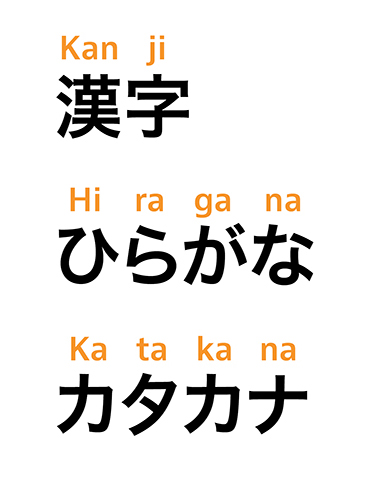
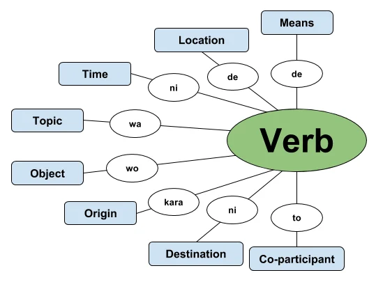

はじめまして！- Hajimemashite! - Nice to Meet you!
Welcome to my Japanese learning website! There are three main topics to explore: the Japanese alphabet, grammar, and vocabulary.
Alphabet
The first step to learning Japanese is mastering the writing systems. So start your journey here.
It is also rewarding to be able to read words you may see in media or when traveling to Japan. Good Luck!

Grammar
Most language courses start with learning grammar fundamentals. It can be tough to learn at first.
But can be applied to sentences and phrases you might learn or encounter.

Vocabulary
Building your vocabulary is essential for communicating in Japanese. And probably the most enjoyable and important aspect to being able to understand and communicate Japanese.
Learn new words and phrases to expand your language skills!
Frequently Asked Questions
A page for my responses to common questions asked about learning Japanese and the language in general.
Visit the FAQUseful Resources and Sources Used
Check out this page to further you're learning with extra resources and to see the sources of the content see on this website.
Explore resources